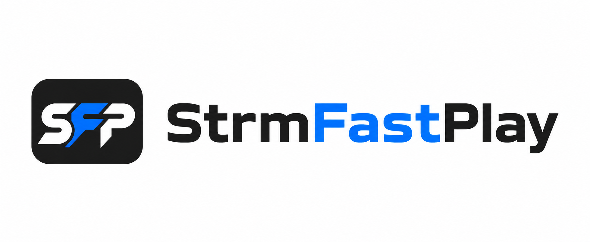

改善 Jellyfin STRM 起播慢、网盘影片播放前等待时间过长。
存储库安装：先加入 https://skillgodak.github.io/StrmFastPlay/manifest.json，再依次打开“控制台”→“扩展功能”→“全部”，搜索 StrmFastPlay 并安装。
手动安装：从 Releases 下载 ZIP，将 DLL 与 meta.json 解压到 jellyfin/config/plugins/StrmFastPlay/。两种方式安装后都需要完整重启 Jellyfin。
StrmFastPlay 专门针对 Jellyfin 远程 STRM / 网盘播放流程进行优化，目标是减少点击播放后可以避免的等待时间。
以上仅代表常见适用场景；实际效果取决于来源能否正常播放、直链质量、CDN、网络与媒体本身。